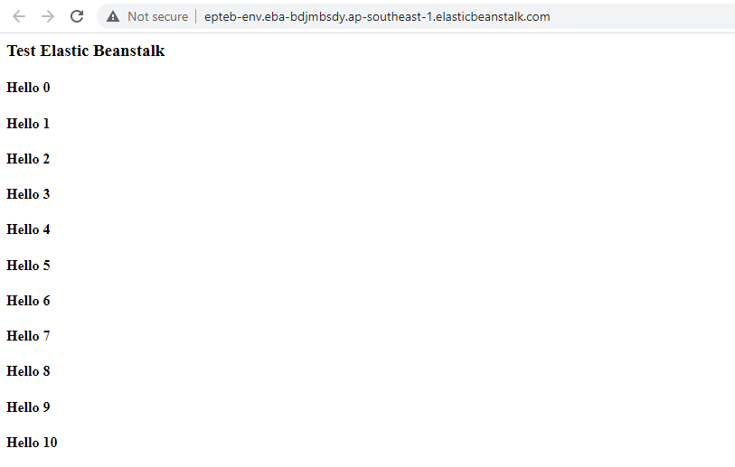

ในรูปคือการสร้างเครื่อง server ผ่านบริการของ Amazon เรียกว่า Elastic Beanstalk เมื่อคลิ๊ก create จะทำการสร้าง EC2 ให้เราอีกทีแบบง่ายๆ ซึ่งแน่นอนว่าค่าใช้จ่ายก็มากขึ้นตามมาด้วย ซึ่งเราสามารถนำโค้ดบีบอัดเป็น zip และ upload ขึ้นไปบน server ของเราอย่างง่ายดายโดยไม่ต้องใช้ FileZilla ก็ได้ดังรูปด้านล่าง
